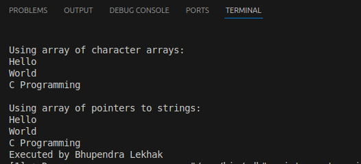

Chapter 2: C-Programming
Revision of Concepts of Class 11
- Sequence: Executing statements in order.
- Selection: Making decisions with conditions (e.g.,
if,else). - Iteration: Repeating actions (e.g., loops).
Iterative Control Structure
Looping is a process of repeating a certain group of statements until a specified condition is satisfied. There are three types of loop in C. They are:- For loop A for loop in C is a control flow statement that allows code to be repeatedly executed based on a given condition. It is used when the number of iterations is known before the loop starts, or when you need to repeat a block of code a specific number of times. It's Syntax is :
- While loop A while loop in C is a control flow statement that repeatedly executes a block of code as long as a given condition evaluates to true. The condition is checked before each iteration, and the loop continues to execute until the condition becomes false. it is Syntax is :
- Do-while loop A do-while loop in C is a control flow statement that repeatedly executes a block of code at least once, and then continues executing as long as a specified condition evaluates to true. Unlike the while loop, the do-while loop checks the condition after executing the code block, meaning the loop body will always run at least once, even if the condition is false. It's Syntax is :
for (initialization; condition; increment/decrement) {
// Code to be executed repeatedly
}
It's Example is :
#include <stdio.h>
int main() {
// A for loop to print numbers from 1 to 5
for (int i = 1; i <= 5; i++) {
printf("%d\n", i);
}
return 0;
}

while (condition) {
// Code to be executed repeatedly
}
It's Example is :
#include <stdio.h>
int main() {
int i = 1; // Initialize the counter
// A while loop to print numbers from 1 to 5
while (i <= 5) {
printf("%d\n", i); // Print the current value of i
i++; // Increment the counter
}
return 0;
}
do {
// Code to be executed repeatedly
} while (condition);
It's Example is :
#include <stdio.h>
int main() {
int i = 1; // Initialize the counter
// A do-while loop to print numbers from 1 to 5
do {
printf("%d\n", i); // Print the current value of i
i++; // Increment the counter
} while (i <= 5); // Condition checked after the loop body
return 0;
}
Array
An array in C is a collection of elements of the same data type stored in contiguous memory locations. It allows you to store multiple values under a single variable name, and you can access each value using an index.
It's type are:- One Dimensional Array A one-dimensional array in C is a linear collection of elements of the same data type, stored in contiguous memory locations. It is a list of elements that can be accessed using a single index. The array can be thought of as a row of elements, where each element is identified by its index. it's example is:
- Two Dimensional Array In C, a two-dimensional array is essentially an array of arrays. It can be thought of as a table with rows and columns. You can define a two-dimensional array by specifying the type of the elements and the number of rows and columns. it's example is:
- Multi Dimensional Array In C, a multi-dimensional array is an array that has more than two dimensions. The most common multi-dimensional arrays are two-dimensional arrays (which can be thought of as matrices), but you can define arrays with three or more dimensions as well. it's example is:
#include <stdio.h>
int main() {
// Declare and initialize a one-dimensional array of integers
int numbers[5] = {10, 20, 30, 40, 50};
// Print each element of the array using a loop
for (int i = 0; i < 5; i++) {
printf("%d\n", numbers[i]);
}
return 0;
}
#include <stdio.h>
int main() {
// Declare and initialize a two-dimensional array of integers
int matrix[3][3] = {
{1, 2, 3},
{4, 5, 6},
{7, 8, 9}
};
// Print each element of the array using nested loops
for (int i = 0; i < 3; i++) {
for (int j = 0; j < 3; j++) {
printf("%d ", matrix[i][j]);
}
printf("\n");
}
return 0;
}
#include <stdio.h>
int main() {
// Declare and initialize a three-dimensional array of integers
int cube[3][3][3] = {
{
{1, 2, 3},
{4, 5, 6},
{7, 8, 9}
},
{
{10, 11, 12},
{13, 14, 15},
{16, 17, 18}
},
{
{19, 20, 21},
{22, 23, 24},
{25, 26, 27}
}
};
// Print each element of the array using nested loops
for (int i = 0; i < 3; i++) {
for (int j = 0; j < 3; j++) {
for (int k = 0; k < 3; k++) {
printf("%d ", cube[i][j][k]);
}
printf("\n");
}
printf("\n");
}
return 0;
}
String array in C
In C, a multi-dimensional array is an array that has more than two dimensions. The most common multi-dimensional arrays are two-dimensional arrays (which can be thought of as matrices), but you can define arrays with three or more dimensions as well. it's syntax is:
char strings[3][20]; // An array of 3 strings, each can hold up to 19 characters + null terminator
it's example is:
#include <stdio.h>
int main() {
// Method 1: Array of character arrays
char strings1[3][20] = {
"Hello",
"World",
"C Programming"
};
printf("Using array of character arrays:\n");
for (int i = 0; i < 3; i++) {
printf("%s\n", strings1[i]);
}
// Method 2: Array of pointers to strings
char *strings2[3];
strings2[0] = "Hello";
strings2[1] = "World";
strings2[2] = "C Programming";
printf("\nUsing array of pointers to strings:\n");
for (int i = 0; i < 3; i++) {
printf("%s\n", strings2[i]);
}
return 0;
}

Working with a Function
- Define function
A function in C is a block of code that performs a specific task. It helps organize code, promotes reusability, and makes programs easier to understand and maintain. - Syntax of functions
return_type function_name(parameter_list) { // body of the function }Example:int add(int a, int b) { return a + b; } - Types of functions
- Library functions: Predefined functions provided by C libraries, such as
printf(),scanf(),sqrt(), etc. - User defined functions: Functions created by the programmer to perform specific tasks, such as
int add(int a, int b).
- Library functions: Predefined functions provided by C libraries, such as
- Components of function
- Function prototype: Declaration of a function that tells the compiler about the function's name, return type, and parameters.
int add(int, int);
- Function call: Invoking the function to execute its code.
sum = add(5, 3);
- Function definition: Actual implementation of the function.
int add(int a, int b) { return a + b; } - Return type: Specifies the type of value the function returns (e.g.,
int,float,void).
- Function prototype: Declaration of a function that tells the compiler about the function's name, return type, and parameters.
2. Categories of Functions in C
- i. Function with return type but no arguments
int getNumber() { return 10; } int main() { int num = getNumber(); printf("%d\n", num); // Output: 10 return 0; } - ii. Function with return type with arguments
int add(int a, int b) { return a + b; } int main() { int sum = add(5, 3); printf("%d\n", sum); // Output: 8 return 0; } - iii. Function with no return type and no arguments
void greet() { printf("Hello, World!\n"); } int main() { greet(); // Output: Hello, World! return 0; } - iv. Function with no return type but with arguments
void display(int n) { printf("Number: %d\n", n); } int main() { display(7); // Output: Number: 7 return 0; }
Storage Classes in C
- Automatic (auto):
Variables declared inside a function without any storage class specifier are automatic by default. They are created when the function is called and destroyed when the function exits. - External (extern):
Used to declare a global variable that is defined in another file or outside the current scope. It allows sharing variables across multiple files.extern int y; // Declares y defined elsewhere - Register:
Suggests that the variable be stored in a CPU register for faster access. Used for frequently accessed variables, but actual storage depends on compiler.register int counter; - Static:
Variables retain their value between function calls. For local variables, static means the value persists after the function exits. For global variables, static restricts visibility to the current file.#include
void staticExample() { static int count = 0; count++; printf("Static count: %d\n", count); } int main() { staticExample(); staticExample(); staticExample(); return 0; }
| Feature | auto | register | static | extern |
|---|---|---|---|---|
| Scope | Local to block/function | Local to block/function | Local to block/function (if inside function), or global (if outside) | Global (defined elsewhere) |
| Default Value | Garbage (undefined) | Garbage (undefined) | Zero | Depends on its definition |
| Storage Location | RAM (stack) | CPU Register (if available) | RAM (data segment) | RAM (global segment) |
| Lifetime | During function/block execution | During function/block execution | Entire program lifetime | Entire program lifetime |
| Keyword | auto |
register |
static |
extern |
| Use Case | Default for local variables | For fast-access small variables | Persistent local variables | Access global variable from another file |
| Can be used with global variables? | No | No | Yes | Yes |
4. Recursive Function in C
A recursive function is a function that calls itself to solve a problem. Recursion is useful for problems that can be broken down into smaller, similar subproblems.
Syntax:
return_type function_name(parameters) {
if (base_condition) {
// Stop recursion
return value;
} else {
// Recursive call
return function_name(smaller_problem);
}
}
Example: Factorial using recursion
#include <stdio.h>
int factorial(int n) {
if (n == 0)
return 1;
else
return n * factorial(n - 1);
}
int main() {
int num = 5;
printf("Factorial of %d is %d\n", num, factorial(num));
return 0;
}
Example: Fibonacci using recursion
#include <stdio.h> #includeint fibonacci(int n) { if (n == 0) return 0; else if (n == 1) return 1; else return fibonacci(n - 1) + fibonacci(n - 2); } int main() { int n = 6; for (int i = 0; i < n; i++) { printf("%d ", fibonacci(i)); } return 0; }
5. Passing Array to a Function in C
Arrays can be passed to functions as arguments. This allows functions to process multiple values at once.
Syntax:
return_type function_name(data_type array_name[], int size) {
// Function body
}
Example: Passing array to a function (sum of elements)
#include <stdio.h>
int sum(int arr[], int n) {
int total = 0;
for (int i = 0; i < n; i++) {
total += arr[i];
}
return total;
}
int main() {
int numbers[5] = {1, 2, 3, 4, 5};
printf("Sum = %d\n", sum(numbers, 5));
return 0;
}
Example: Passing array to a function (printing elements)
#include <stdio.h>
void printArray(int arr[], int n) {
for (int i = 0; i < n; i++) {
printf("%d ", arr[i]);
}
printf("\n");
}
int main() {
int numbers[4] = {10, 20, 30, 40};
printArray(numbers, 4);
return 0;
}